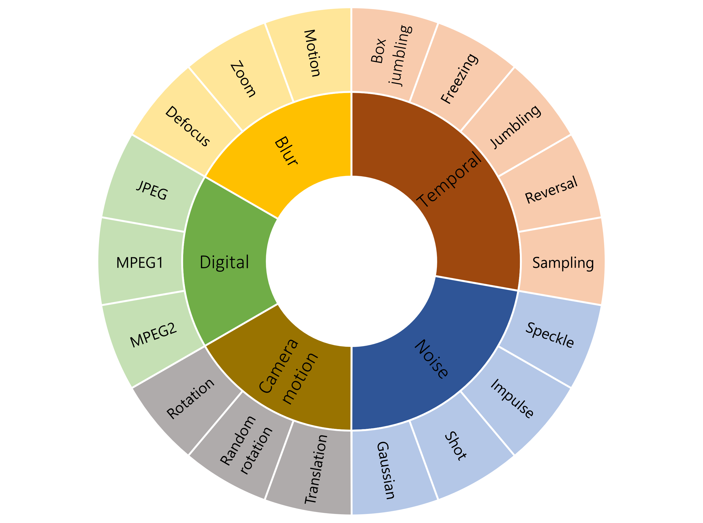
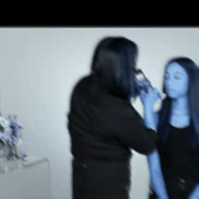
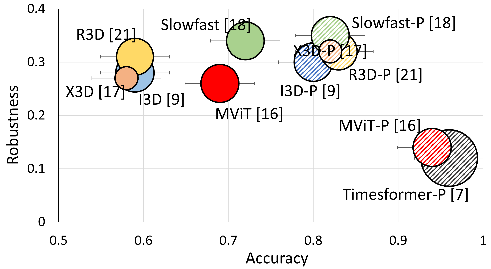

A large-scale analysis on robustness in action recognition
|
Anonymous ECCV Submission
|

Different real-world perturbations used in this study.
Abstract
We have seen a great progress in video action recognition
in recent years. There are several models based on convolutional neural
network (CNN) with some recent transformer based approaches which
provide state-of-the-art performance on existing benchmark datasets.
However, robustness has not been studied for these models which is
a critical aspect for real-world applications. In this work we perform
a large-scale robustness analysis of these existing models for video
action recognition. We mainly focus on robustness against distribution
shifts due to real-world perturbations instead of adversarial pertur-
bations. We propose four different benchmark datasets, HMDB-51P,
UCF-101P, Kinetics-400P, and SSv2P and study the robustness of
six different state-of-the-art action recognition models against 90 differ-
ent perturbations. The study reveals some interesting findings, 1) trans-
former based models are consistently more robust against most of the
perturbations when compared with CNN based models, 2) Pretraining
helps Transformer based models to be more robust to different pertur-
bations than CNN based models, and 3) All of the studied models are
robust to temporal perturbation on the Kinetics dataset, but not
on SSv2; this suggests temporal information is much more important for
action label prediction on SSv2 datasets than on the Kinetics dataset.
We hope that this study will serve as a benchmark for future research in
robust video action recognition.
Sample perturbations
Severity increasing from left to right.
 Box jumbling
Box jumbling


 Random rotation
Random rotation

 Motion blur
Motion blur
Robustness analysis

A performance and robustness visualization of action recognition models on UCF-101P. y-axis: relative robustness (lower is better), x-axis: accuracy on clean videos, P indicates pre-training, and the size of circle indicates FLOPs. Transformer based models, such as MViT, not only performs better than CNN counterparts but are more robust against distribution shifts. However, without pre-training its robustness drops significantly.